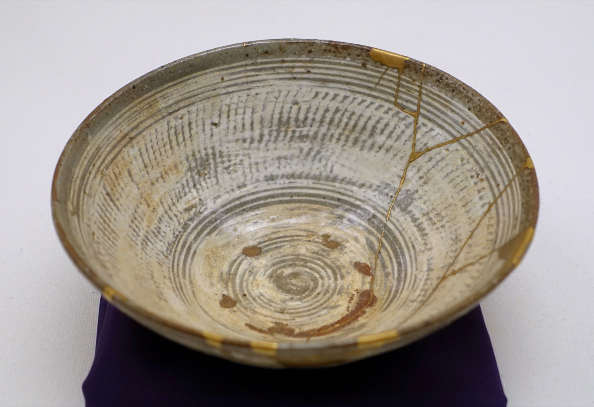

Ernest Kurtz and Katherine Ketcham on accepting help before you have your life in order. Their recovery book keeps responsibility for wrongdoing alongside acceptance of human limits.
Kurtz and Ketcham, 1992 /five stories/ 9 min read
scroll
Alcoholics Anonymous begins with an admission of powerlessness. Its later steps ask people to identify the harm they've done and make amends.
The Spirituality of Imperfection, published in 1992 by Ernest Kurtz and Katherine Ketcham, explores that sequence. The authors argue that requiring perfection can keep you from accepting help from other imperfect people.
Kurtz wrote Not-God, a history of AA; Ketcham coauthored Under the Influence, a book about alcoholism. Here they use recovery accounts and older teaching stories to ask how someone with mixed motives and unfinished business can live among other people.

A Korean tea bowl from the Joseon dynasty, 16th century, with gold lacquer repairs. Ethnological Museum, Berlin. Photograph by Daderot, public domain.
Kintsugi repairs pottery with lacquer and gold. Someone had to fit these pieces together.
The recovery argument
What “not God” means
Kurtz's phrase names a limit to self-reliance. A person can repeatedly fail to stop drinking and still insist the next solitary attempt will work. Admitting that this strategy has failed makes room for help.
AA's first step specifies being powerless over alcohol. It doesn't declare a person helpless in every area of life. The fourth and fifth steps call for an inventory of wrongdoing and an admission to another person. The eighth and ninth require willingness to make amends, followed by direct amends where possible, with an exception when doing so would cause further injury. The steps are worth reading together.
In a later paper, Kurtz and William White describe belonging through an acknowledged inability to drink safely. Members can discuss a limitation they had been hiding. Other people can offer help, though they can't live the new life for you.
That gives storytelling a particular job. Hearing another person's account of drinking, failed attempts to stop, and recovery can make an admission less isolating. Kurtz and Ketcham extend that possibility beyond AA: an honest account of failure can help someone recognize their own difficulty.
The stories
Five examples, with different jobs
The book opens with the rose story. These four other examples let us test its storytelling method. They are retellings and a selected passage, with sources below each card.
Their settings matter. The Hasidic pockets concern human worth before God; Moses's story concerns forgiveness within a Christian monastic community; Nan-in's concerns a student seeking instruction. None contains a religion's entire teaching.
Choose a story; use arrow keys within the tabs
Description and experience
The fragrance of a rose
Students are discussing a saying attributed to Laozi about knowing and speaking. Their teacher asks which of them knows the fragrance of a rose. Everyone does. When he asks them to put it into words, they fall silent.
Knowing a smell and describing it are different tasks. The authors use that gap to explain why definitions alone won't produce the experience they call spirituality. It doesn't establish that every important truth is beyond explanation.
Retold from chapter 1, the publisher's sample. The Laozi quotation inside it doesn't make the whole tale a Daoist source.
Humility and worth
The two pockets
A teaching attributed to Rabbi Simcha Bunim says to carry a note in each pocket. One reads, For my sake was the world created. The other reads, I am but dust and ashes. Reach for the one you need.
Someone who thinks they don't matter needs a different correction from someone who thinks only they matter. Neither note is sufficient alone.
A monk has committed a fault, and a council sends for Abba Moses. He first refuses to come. After a second request, he arrives carrying a leaking jug of water. Asked what it means, he explains that his own sins run out behind him, unnoticed, while he comes to judge another person's errors. The monks forgive their brother.
Moses makes the judges consider what they have overlooked in themselves. The tale leaves the offense unspecified, so its ending can't tell us how a community should handle a particular harmful act.
Sayings of the Desert Fathers, alphabetical collection, Moses 2. The jug version appears in Benedicta Ward's “Discernment: A Rare Bird,” page 12.
Being ready to learn
A cup of tea
A professor visits the Zen teacher Nan-in. Nan-in pours tea into the visitor's cup and keeps pouring after it is full. The professor objects. The teacher compares the overflowing cup to a mind occupied by its own opinions: where is there room for the instruction the visitor came to request?
The visitor wants to learn but has brought assumptions that prevent him from listening.
Retold from “A Cup of Tea,” the first of 101 Zen Stories, collected by Nyogen Senzaki and Paul Reps and included in Zen Flesh, Zen Bones (1957). The published telling, not a transcript of a documented visit.
An achievable demand
We are not saints
After listing the twelve steps, AA's book says its members don't maintain perfect adherence to them. It calls for willingness to grow and states, We claim spiritual progress rather than spiritual perfection.
This concession follows concrete demands, including admitting wrongs and making amends. It gives someone a reason to continue after falling short without removing the obligation to improve.
The book's last part names six experiences. In “Recovery Spirituality” (2015), Kurtz and White explain that these emerged from listening to recovery stories. These are reported experiences, not guaranteed results.
The authors' terms, in plain English
1
Release
Freedom from the compulsion to drink. People may experience this as being released, despite the effort they contributed.
2
Gratitude
Noticing help received and things previously taken for granted. In AA accounts, this often includes sobriety the person couldn't sustain alone.
3
Humility
An account of yourself that neither inflates your importance nor erases it. The book explicitly distinguishes humility from self-abasement.
4
Tolerance
Less eagerness to condemn other people after becoming familiar with your own failures. This is a change in how you judge; it needn't prevent you from objecting to harm.
5
Forgiveness
A loosening of resentment that can't be produced on command. The authors include the experience of being forgiven after making amends.
6
Being at home
Belonging somewhere without concealing the difficulty that brought you there. In AA, people can recognize one another through the problem they share rather than their accomplishments.
Forgiveness is the term most likely to be misused. Chapter 15 expressly keeps responsibility for one's actions. An apology doesn't automatically repay a debt, undo an injury, or secure another person's trust. Forgiveness also doesn't require the injured person to continue a relationship or expose themselves to further harm.
The book's vocabulary
Spirituality and religion
The authors want readers alienated from religious institutions to be able to discuss spiritual experience. In chapter 1, they report that people who describe themselves as spiritual but not religious tend to associate religion with belief, doctrine, and authority. The book puts more emphasis on experience.
That distinction explains whom they're trying to reach. It doesn't divide people into believers and experiencers. A congregation can offer mutual help; someone outside one can be rigidly certain. The book relies on stories in which experience and religious commitments are connected.
The limit of the argument
Which limits should we accept?
The case against requiring perfection doesn't establish that surrender is the right response to every difficulty. You can't control whether someone forgives you. You can return money you took and stop taking more. Both can occur in the same relationship.
An anthology also selects its witnesses. Finding a story about humility in several traditions doesn't prove that humility explains each tradition, or that their stories developed without contact. The anthology offers analogies, not evidence that theological disagreements disappear.
Moses's story leaves us with the hardest problem. We don't learn what the brother did or whom he harmed. Without that information, we can't know whether forgiveness was enough. The story gives the judges a reason to examine themselves; it gives the reader too little evidence to judge their decision.
Reading on
Sources and scope
The publisher's sample supplies chapter 1; the book preview supplies page references and chapter structure. Kurtz's later paper helps explain the recovery terms. The gallery links its story sources; its comments are this post's interpretation.
Book and recovery sources
Ernest Kurtz and Katherine Ketcham.The Spirituality of Imperfection, first published by Bantam in 1992. Publisher's chapter 1 sample; 2009 edition preview. Relevant pages: 24 on one usage of “religion”; 49 on Moses; 60 on the pockets; 159 on experiences that cannot be commanded; 187 on humility; 219 and 224 on amends and responsibility.
Ernest Kurtz and William L. White.“Recovery Spirituality,” Religions 6 (2015). Sections 6 and 7 explain mutuality and the six experiences. This is an account of recovery spirituality, not a controlled test of the book's claims. Author-text reprint.